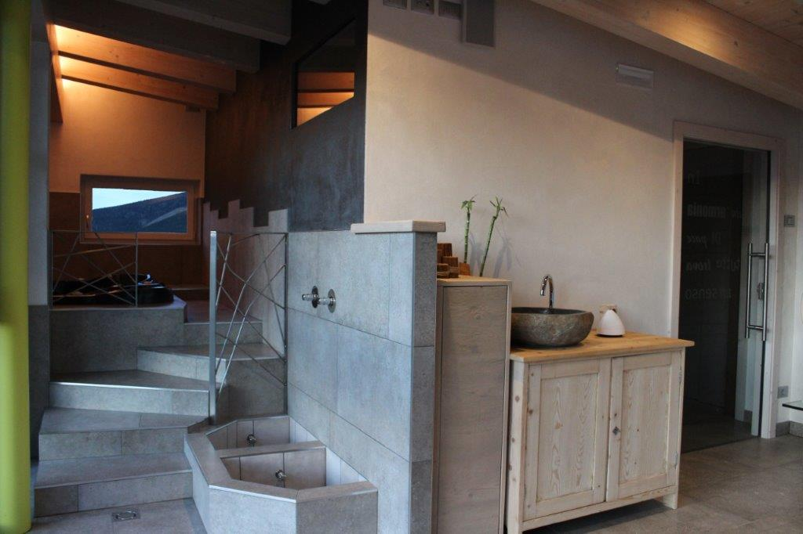

    <!-- ******DOCS****** --> 
    <section id="wellness" class="docs section">
        <div class="container">
            
            <h2 class="title text-center">WELLNESS PANORAMICA</h2> <h3>GODITI DEL SANO RELAX</h3>           
            
            <p class="text-center right-text">Panoramica zona wellness in una terrazza vetrata con vista sulla catena del Lagorai.<br>
Sauna in cedro, Bagno turco aromatico, vasca idromassaggio, percorso kneipp,  doccia emozionale e zona relax con tisane.</p>
            
            	<div class="item col-md-12" style="margin-top:30px;">
        		<div id="galleria">
				    <a href="../img/IMG_0203.jpg">
				        
				    </a>
				    <a href="../img/IMG_0209.jpg">
				        
				    </a>
				    <a href="../img/IMG_0223finestre.jpg">
				        
				    </a>
				    <a href="../img/IMG_0228.jpg">
				        
				    </a>
				</div>  
        	
        </div>                                
         	            
        </div><!--//container-->
    </section><!--//docs->
